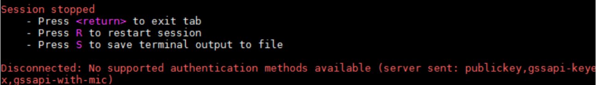

Symptom
When I attempted to remotely log in to a Linux ECS, the system displayed error message "Disconnected: No supported authentication methods available".
Figure 1 No supported authentication methods available

Possible Causes
A policy that denies password-authenticated logins is enabled on the SSH server.
Solution
- Open the /etc/ssh/sshd_config file and check the following settings:
vi /etc/ssh/sshd_config
- Modify the following settings:
Change PasswordAuthentication no to PasswordAuthentication yes.
Alternatively, delete the comment tag (#) before PasswordAuthentication yes.
- Restart SSH.
- CentOS 6
service sshd restart
- CentOS 7
systemctl restart sshd